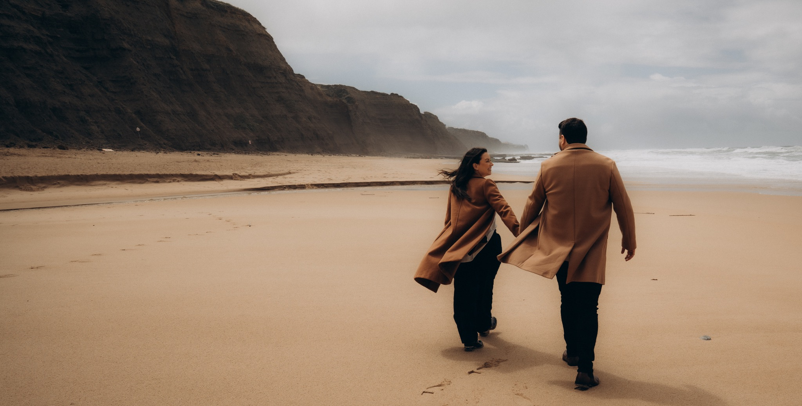
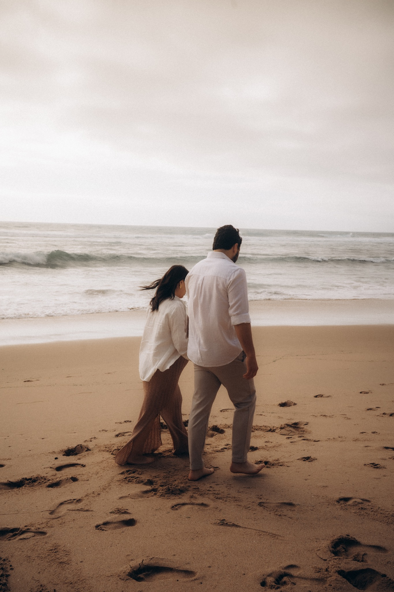
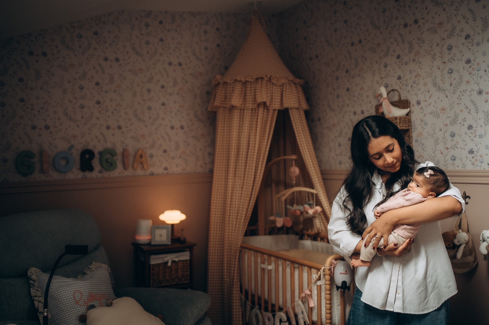
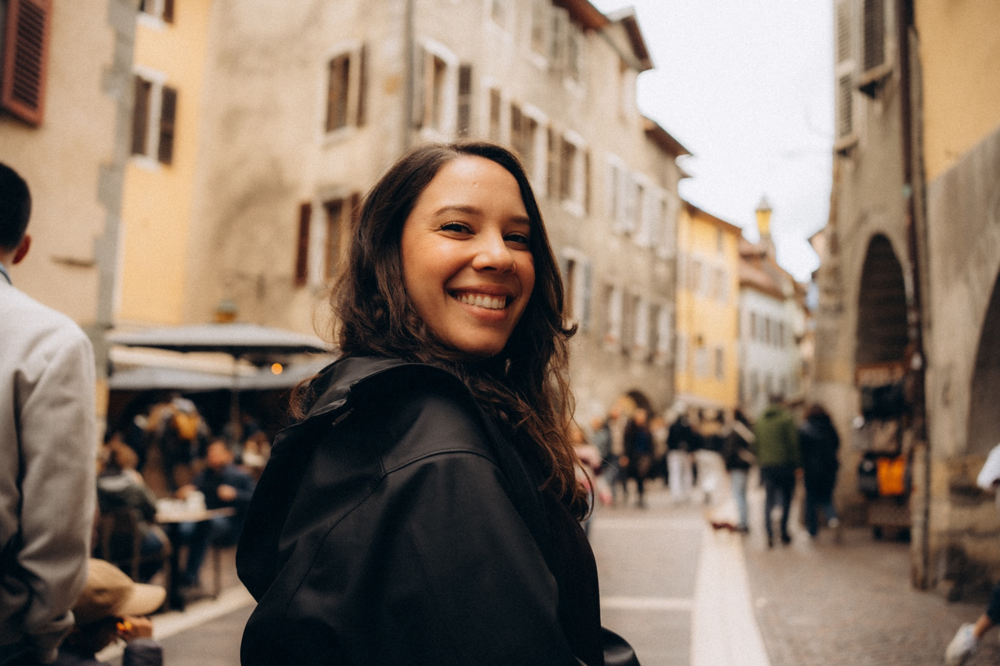

Honest photographs,
made to feel lived in.
I’m drawn to warm light, movement, quietness and the little imperfections that make a photograph feel like a memory.
My approach is gentle and spontaneous: enough direction to make you feel comfortable, then plenty of room for the moments that happen naturally.

The in-between is usually my favorite part.
The walk before the portrait. The laugh that wasn't planned. The hand reaching for another hand.
Nothing has to look too perfect.
I want your photographs to keep the feeling of the day — not just what it looked like.

A collection of
people & places.
View all stories ↗Full sessions, little details and the moments in between.



I want your photographs to feel like memories.
I’m Cami, a photographer based in Porto and available across Europe.
I’m drawn to honest gestures, warm light, movement, quietness and the little imperfections that make a photograph feel lived in.
My approach is gentle and spontaneous. I’ll give you enough direction to feel comfortable, then leave room for the moments that happen naturally.
Let's make something meaningful ↗Have a story
in mind?
Tell me a little about what you're planning, where you'll be, and what you want to remember.
hello@camipucineri.com ↗